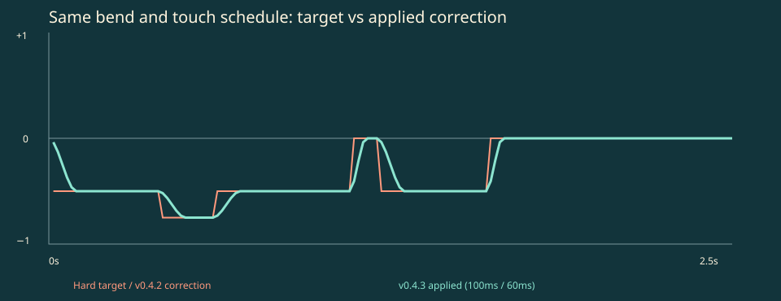
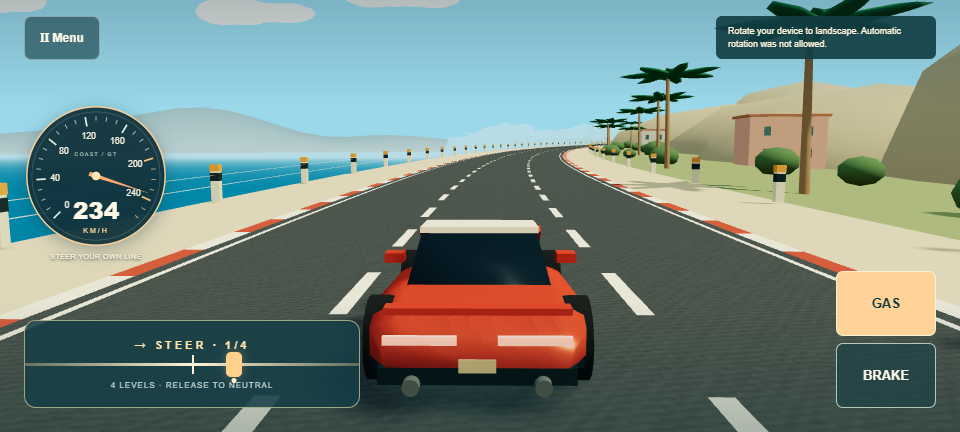
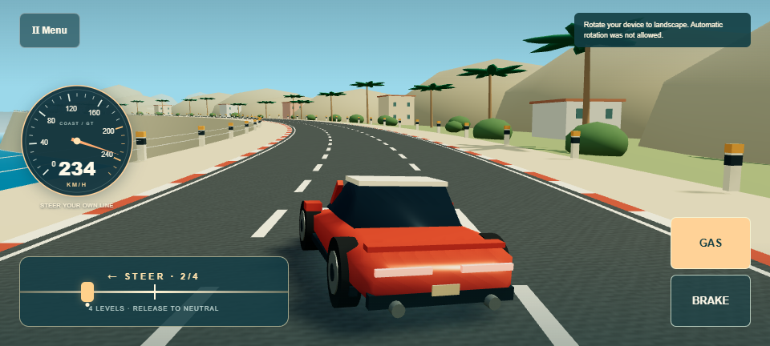
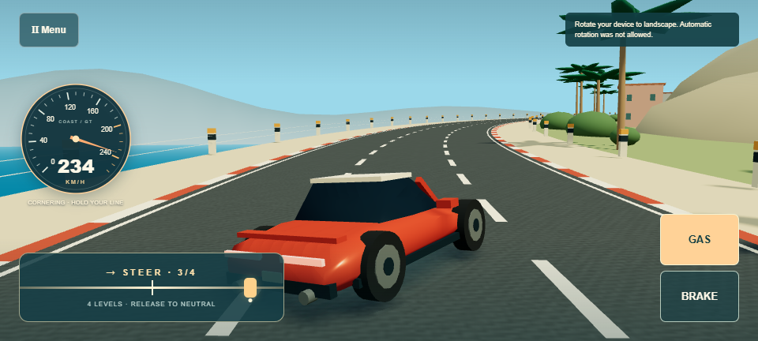
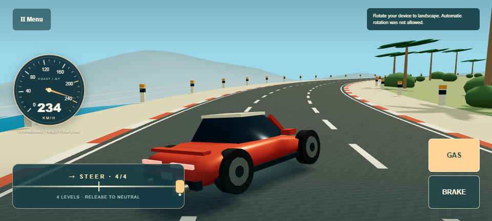

Actual local Edge recordings. Normal game has no autopilot. Challenge clips use trusted touch; the 125s loop uses an external test-only driver. Videos are silent. Hardware feel and fun await human review.
Hard mode reproduces the prior instantaneous actuator on the same current geometry, speed and touch schedule; all other visuals remain v0.4.3. Curves use simulation time at 60Hz; comparison videos render every step.





Projected lookahead · Inverse geometry calibration · 120s 30/60Hz continuity